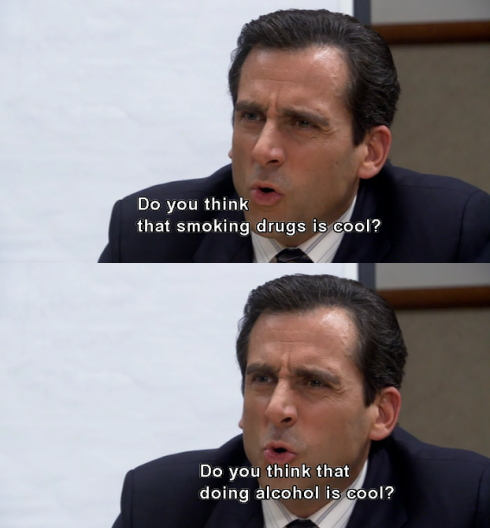

My Favorite Office Quotes!
Let's get started... first we will look at some of Michael Scott's best quotes
-
"Do you think that smoking drugs is cool? Do you think that doing alchohol is cool?"

In this quote, we can see how Michael Scott really believes in living a healthy life, and we appreciate person who values his health.
-
"Dwight you ignorant slut!"
This line of Michael's is a fan favorite. It is simply iconic and must be remembered by all Office watchers and non-watchers.
-
"I feel like all my kids grew up, and then they married each other. It's every parents dream."
Oh Michael, sometimes you just say things that seem so right yet sound so wrong, but we love you anyway.
-
"I DECLARE BANKRUPTCY"
He can just be so...dumb sometimes? Yet so funny too.
Now lets move on from Michael and look at some of my favorite scenes from The Office:
-
Lets start with the most iconic scene from a cold opening of the show: Kevin dropping his chili. What else can be expected of Kevin Malone... What a silly silly man

-
Here we have Stanley dribbling...or at least trying to. Look at that form Stanley! A for effort, D for everything else.
-
Sorry, I had to include Kevin again. He is just such a...character. A lovable one I might add.

-
Here we have Dwight displaying the wigs he has for everyone in the office. Oh Dwight...you ignorant slut as Michael would say.